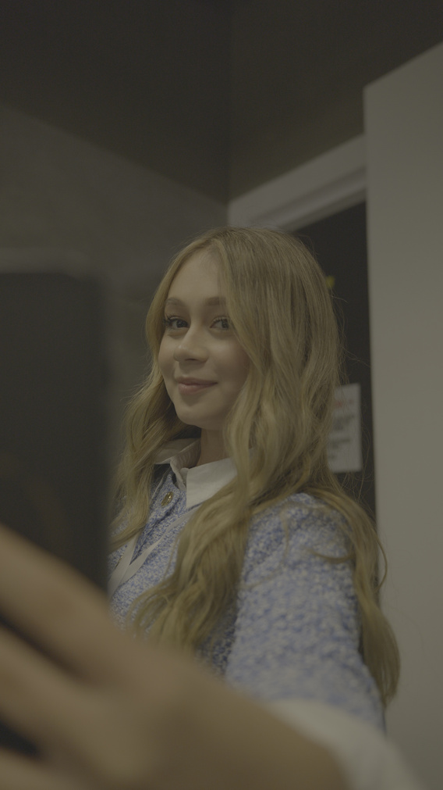
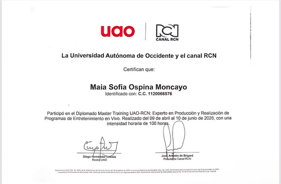
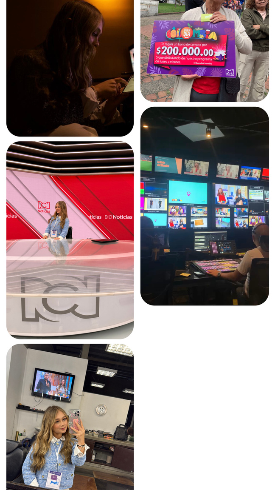
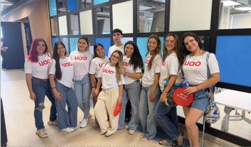
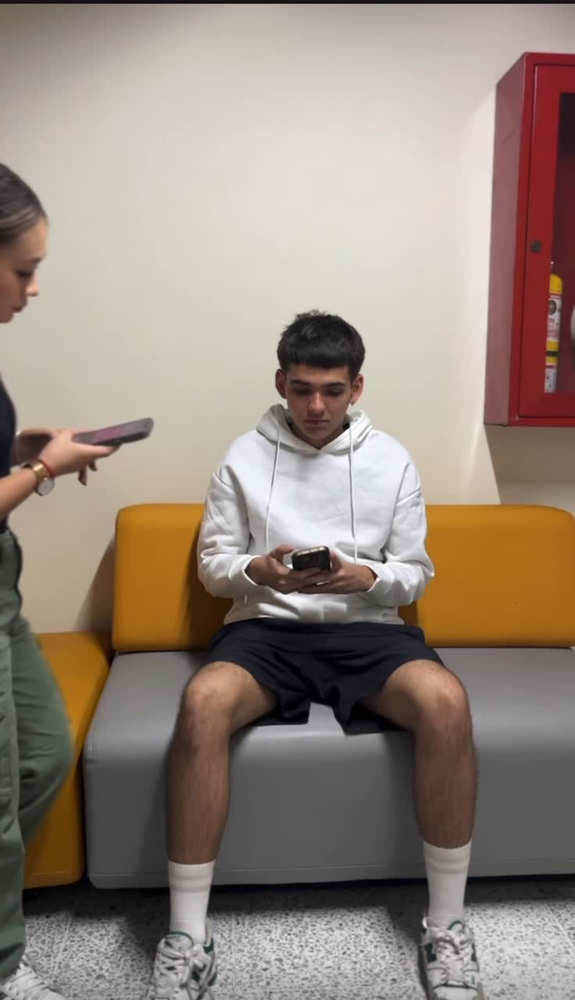
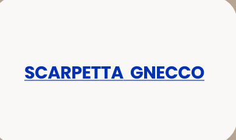
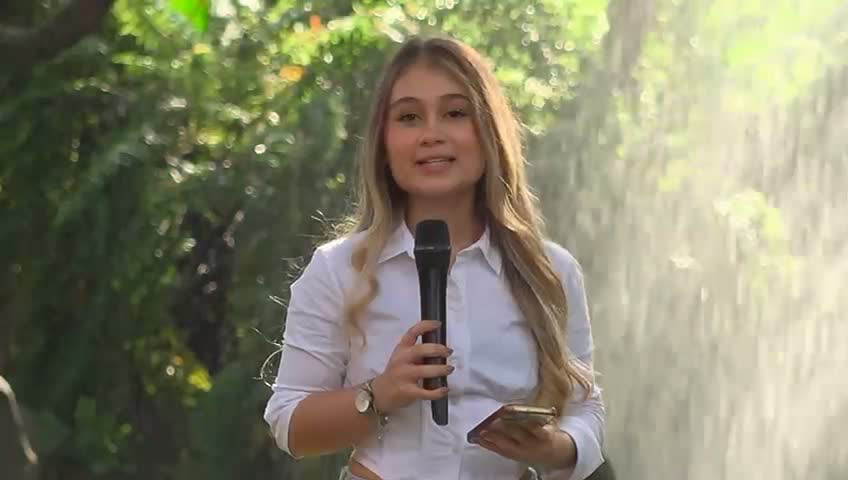
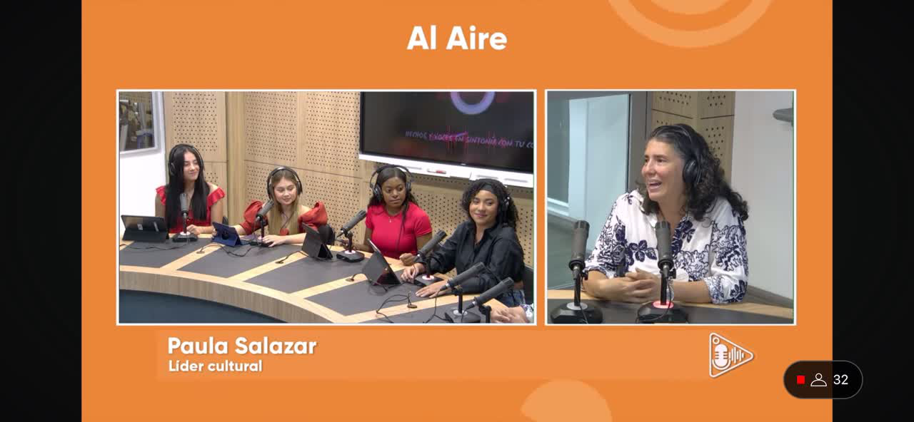
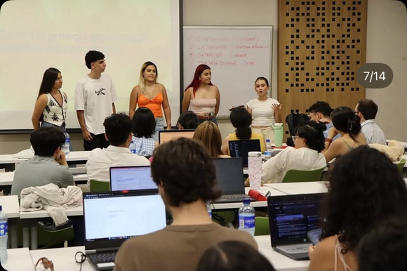

2023 — ACTUALIDAD
Comunicación Social y Periodismo
Universidad Autónoma de Occidente · Cali
Formación en investigación, reportería, redacción, producción audiovisual y creación de contenidos digitales.
PORTAFOLIO PROFESIONAL · CALI, COLOMBIA
Soy Maia Sofía Ospina Moncayo, estudiante de Comunicación Social y Periodismo, con interés en la comunicación organizacional, la planeación estratégica y la creación de contenidos.

Soy estudiante de Comunicación Social y Periodismo en la Universidad Autónoma de Occidente. Durante mi formación he participado en proyectos de reportería, investigación, producción audiovisual y comunicación digital.
Me caracterizo por mi compromiso, responsabilidad y disposición para aprender. Me interesa seguir desarrollándome en el campo de la comunicación y aportar a las organizaciones mediante mensajes claros, estratégicos y pensados para sus públicos.
Mi recorrido académico combina formación universitaria con experiencias prácticas en producción audiovisual, medios y comunicación.
Universidad Autónoma de Occidente · Cali
Formación en investigación, reportería, redacción, producción audiovisual y creación de contenidos digitales.
RCN Televisión – UAO
Formación en producción y creación de contenidos para entretenimiento televisivo, con práctica en coordinación de remotos, producción, reportería y trabajo en equipo.


Institución Educativa Santa María Goretti
En el CLAEP Challenge 2026, junto a mi equipo, desarrollé una propuesta para enfrentar la desinformación en redes sociales mediante análisis de información, contraste de fuentes y gamificación.
La experiencia obtuvo reconocimiento en el encuentro y fortaleció mi trabajo colaborativo, investigación y pensamiento crítico.
CLAEP Challenge · 2026 Podio / 2.º y 3.º lugar reportados en el portafolio

Proyectos académicos y colaboraciones en los que he podido investigar, producir contenidos y relacionarme con diferentes audiencias.
Realicé videos informativos y entrevistas durante la COP16, investigando, interactuando con fuentes y comunicando acontecimientos desde el lugar de los hechos.

Participé en la cobertura de los Juegos Olímpicos de París 2024, creando contenidos informativos y de entretenimiento sobre el evento.

Una selección de ejercicios y proyectos académicos en comunicación estratégica, producción audiovisual y periodismo.

Ejercicios de planeación de contenidos y comunicación para marcas y organizaciones.

Desarrollo en equipo de una propuesta de comunicación a partir del análisis de una situación organizacional.

Análisis de una problemática de empresa y diseño de acciones de comunicación estratégica.

Realización de un programa radial con noticias reales de distintas comunas de Cali y participación de fuentes.

Ejercicio académico de producción periodística y difusión de noticias de interés local.

Programa que cuestiona estereotipos y presenta historias de personas que aportan a la cultura de Cali.
Experiencia práctica en coordinación de remotos, producción y realización de una nota sobre turismo en Mocoa.

Propuesta de campaña para ayudar a reconocer contenidos falsos o manipulados en redes sociales.
Español · Nativo
Inglés · En formación
Estoy abierta a conocer proyectos, aprender y aportar desde la comunicación.